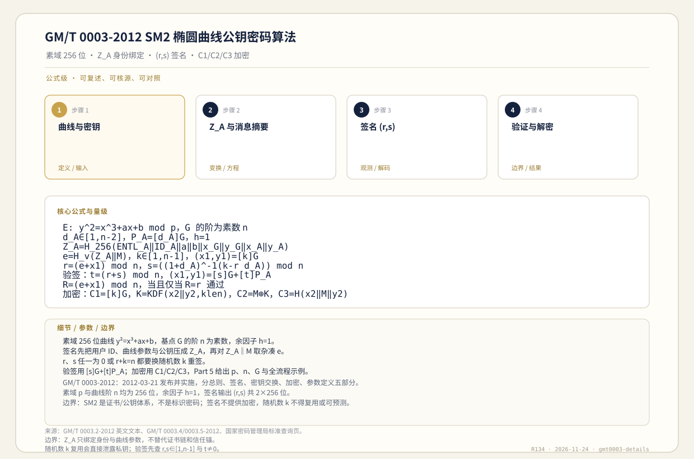
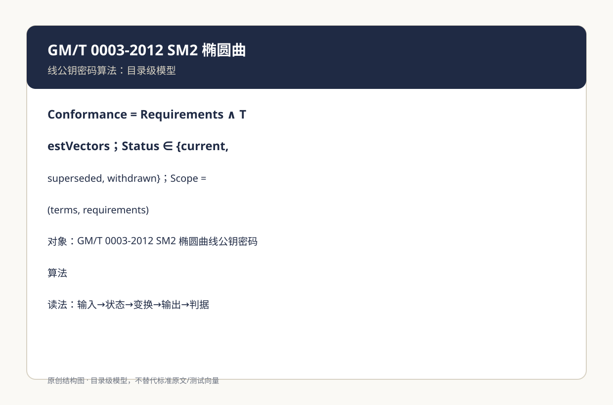

原理与机制
标准：GM/T 0003-2012 SM2 椭圆曲线公钥密码算法（GM/T 0003-2012 SM2 Public Key Cryptographic Algorithms）。GM/T 0003-2012 把 SM2 分成总则、数字签名、密钥交换、公钥加密和参数定义五部分。签名链先取 256 位素域曲线 E: y²=x³+ax+b mod p，基点 G 的阶为素数 n，余因子 h=1；私钥 d_A∈[1,n-2]，公钥 P_A=[d_A]G。签名前先把 ENTL_A、ID_A、a、b、x_G、y_G、x_A、y_A 压成 Z_A，再对 Z_A‖M 取杂凑 e。选随机 k∈[1,n-1]，计算 (x1,y1)=[k]G、r=(e+x1) mod n；若 r=0 或 r+k=n 则重选。再算 s=((1+d_A)^-1(k-r d_A)) mod n，若 s=0 也重选，输出 (r,s)。验签计算 t=(r+s) mod n，用 [s]G+[t]P_A 重建 (x1,y1)，令 R=(e+x1) mod n，R=r 才通过。

为什么重要
SM2 不是“把 ECDSA 换个曲线”。Z_A 把用户身份、曲线参数和公钥一起绑进签名输入，使同一消息在不同身份/参数下得到不同 e；s 里的 (1+d_A)^-1 也让签名方程与 ECDSA 的 k^-1 形式不同。把这些公式写清，读者才能区分“SM2 签名”“SM2 加密”和“SM2 密钥交换”，也才能解释为什么只校验 r、s 范围不够，必须重建 R 并检查 t≠0。
应用与实例
实现签名时按 Z_A→e→k→r→s 的顺序落盘中间值，任一零值都要重试；验签先查 r,s∈[1,n-1]，再算 t 并拒绝 t=0。加密则取接收方公钥 P_B，选 k，算 C1=[k]G、S=[k]P_B、K=KDF(x2‖y2,klen)、C2=M⊕K、C3=H(x2‖M‖y2)，解密先验 C3 再解 C2。参数必须用 Part 5 的 p、a、b、n、G；自建曲线或改动基点会破坏互操作。签名和加密是两条域分离的流程，不能把签名值当密文，也不能把 C1 直接当签名。

边界与攻击面
随机数 k 复用、可预测或跨设备共享会通过 r 相同直接暴露私钥；只检查 r、s 范围而不检查 t≠0 会接受退化输入。Z_A 拼接顺序、ENTL 字节序或 ID 编码错一处，验签就会与标准实现不互通。SM2 是公钥体系，仍需证书链、名字约束和吊销检查来绑定公钥；签名不提供保密性，加密不提供签名者的身份认证。侧信道方面，标量乘、模逆和 KDF 都要常量时间实现。
历史与背景
SM2 于 2010 年公布，2012-03-21 以 GM/T 0003-2012 五部分发布，覆盖总则、签名、密钥交换、加密和参数定义；2016 年上升为 GB/T 32918 系列国家标准。Part 5 给出 p、a、b、n、G 的完整十六进制参数和签名、密钥交换、加解密示例；后续 GM/T 0009 与 GM/T 0010 又规范了 SM2 的使用与加密签名消息语法。
技术参数与复算边界
该条目的形式模型是 (S=\min_i S_i,\quad S_i\in{\text{密钥强度},\text{分组安全},\text{实现安全}})。输入：输入：GM/T 0003-2012 SM2 椭圆曲线公钥密码算法的公开参数、密钥/随机数与消息；变量说明：S 为综合安全强度；各分量取最小值，不能只看密钥位数。 预期输出：按 GM/T 0003-2012 SM2 椭圆曲线公钥密码算法 的规范执行后得到可验证的输出或可比较的优势界。 复算必须给出输入、步骤、输出和单位；示例只演示流程，不替代标准测试向量。
复杂度由密钥长度、分组/状态规模、轮数、随机数质量和敌手模型共同决定；参数越界、版本差异与实现侧信道都可能使公式结论失效。已登记限制：该条目只给出形式模型与可复算步骤，不声称已完成生产实现、侧信道认证或第三方安全评估。
逐步示例与核验
形式模型与复算步骤
[S=\min_i S_i,\quad S_i\in{\text{密钥强度},\text{分组安全},\text{实现安全}}]
GM/T 0003-2012 SM2 椭圆曲线公钥密码算法的公开参数、密钥/随机数与消息；变量说明：S 为综合安全强度；各分量取最小值，不能只看密钥位数。1.读取标准规定的密钥/分组/模式参数。2.按标准表换算等效强度。3.取最弱分量作为系统强度。边界：公式只覆盖已登记的参数与假设；参数取值、标准版本和实现细节仍以来源为准。
参考出处
- Wikipedia search entry for GM/T 0003-2012 SM2 椭圆曲线公钥密码算法. https://zh.wikipedia.org/w/index.php?search=GM%2FT%200003-2012%20SM2%20%E6%A4%AD%E5%9C%86%E6%9B%B2%E7%BA%BF%E5%85%AC%E9%92%A5%E5%AF%86%E7%A0%81%E7%AE%97%E6%B3%95
- Handbook of Applied Cryptography (Menezes, van Oorschot, Vanstone). https://www.cacr.math.uwaterloo.ca/hac/